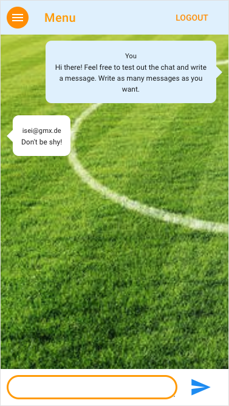

Diese Single Page Application - entwickelt mit Firebase und der Vue CLI für die mobile Nutzung hat Benutzerauthentifizierung und einen Chat in Echtzeit. Ich habe eine simplere Version während meiner Kurszeit gebaut. Es war Teil des Lehrplans. Vor Kurzem habe ich nochmal eine verbesserte Version davon gemacht. Dabei habe ich auf die zwei Vue.js Frameworks Vuetify und Vuex zurückgegriffen, was zu einer noch besseren User Experience führt. Der Kunde ist ein Fußballverein, der seinen Mitlgliedern eine Web App zur Verfügung stellen möchte, damit diese deren Funktionalität auch von unterwegs nutzen können. Dazu gehört einmal der Chat. Weiterhin soll die App aber auch anstehende Spiele anzeigen und allgemeine Informationen zugänglich machen. Die Nutzung des Chats erfordert ein Einloggen. Die anderen Seiten können als Gast benutzt werden.
Ich freue mich, wenn Sie einen Account erstellen und den Chat ausprobierst. Tipp: Nachdem Sie den Link geklickt haben, bietet Chrome die Möglichkeit den 'Device Mode' auf ein Smartphone Ihrer Wahl umzustellen.
SPA für Psychotherapeutin

Diese Website habe ich für meine Mutter gebaut, die als Psychotherapeutin eine eigene Praxis leitet. Es gibt zwei Versionen dieser Seite. Die komplexere Version beinhaltet eine Suchfunktion für Psychotherapeuten und ein Kontaktformular. Die Suchfunktion bietet dem Nutzer die Möglichkeit über die Eingabe einer Addresse Therapeuten sortiert nach Nähe zu dieser Adresse anzuzeigen.
Hierfür nutze ich die von Google Maps bereitgestellte Distance Matrix API. Die Suche kann aber auch ohne die Eingabe einer Adresse genutzt werden. Nutzer können Filter setzen, z.B welche Art von Therapie oder welche Art der Abrechnung sie bevorzugen. Da meine Mutter zum heutigen Zeitpunkt weder das Kontaktformular, noch die Therapeutensuche benötigt, befinden diese sich nicht auf der von meiner Mutter betriebenen Praxis-Website. Gerne können Sie sich aber hier einen Eindruck meiner Arbeit verschaffen.Ich arbeite noch an der browserübergreifenden Kompatibilität, deswegen nutzen Sie bitte Chrome. Der folgende Link führt sie zur Praxis-Website.

Die Seite könnte als simples Frontend eines Buchladen dienen. Es handelt sich hierbei um eines meiner frühsten Projekte. Nutzer können nach Buchtiteln suchen und die Titel umdrehen, um auf der Rückseite mehr Informationen über das Buch zu finden. Dort befindet sich auch ein Button, der eine Bildergallerie öffnet. Die Seite ist durch die Integration von Bootstrap voll responsiv. Wie immer ist auch Vue mit im Spiel. Bitte nutzen Sie Firefox oder Chrome, um die Seite anzuschauen. Die Seite funktioniert aktuell nicht mit anderen Browsern.

TGIF steht für 'Transparency in American Government'. TGIF hat das Ziel, aussagekräftige Daten über die in den Bundesstaaten jeweiligen Kongressabgeordneten und Senatoren der Öffentlichkeit zur Verfügung zu stellen. Trotz des recht simplen Designs, erreicht die Seite, dass der Websitenbesucher durch die Nutzung von Filtern und Tabellen schnell, die für ihn relevanten Informationen findet. Auf einem Github Account finen Sie zwei Versionen. Einmal habe ich die Seite zu Übungszwecken mit Vanilla Javascript gebaut und einmal mit der Hilfe von Vue.js.